第十三届北京市高校五子棋邀请赛自战棋评
#1 第十三届北京市高校五子棋邀请赛自战棋评作者：蓝天蓝 发表时间：2013-12-8 8:21:49
【棋评】【高校赛】第十三届北京市高校五子棋邀请赛自战棋评
作者：王世雄
先聊聊比赛感受吧,每次高校赛,我都会有不同的感受,和很多要好的棋友一起下棋,一起说笑,这种感觉很美好,我很珍惜.我参加五子棋比赛,就是为了反思自己的不足和享受对弈带来的快乐.这次棋评,我想多谈谈比赛之中的感受.
第一轮
开赛时间稍稍的有些拖延,即使这样,我按照对阵表坐好,发现对手还是没来.第一轮就这样被轮空了.小分就这样消失了.我已经连续三次在实战比赛中被第一轮轮空了,可能是对手考虑我车途劳累,需要足够的休息吧.
第二轮
燕京理工学院王世雄（黑）胜 北京交通大学陈怀鑫（白）交换
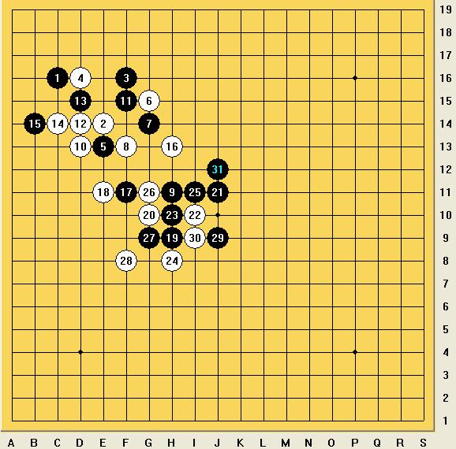
陈怀鑫开局,我选择交换执黑,开局前八手正常,我黑9外飞盖,应该也是一手交换中常用到的局面处理手段,给了对方先手,同时还有进攻压力.行至黑15,黑棋稍稍好下.白16选择下面这个变化,先活三,再盖,可能稍稍好些.
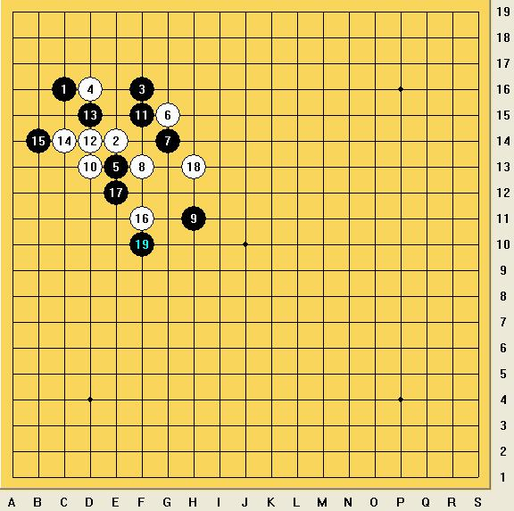
实战中的白16直接外盖了,黑17抢占要点,白18弱防,黑19必胜了.
第三轮
北京理工大学马鑫（黑）负 燕京理工学院王世雄（白）未交换
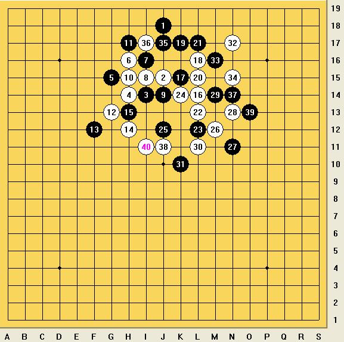
中午我和马鑫还有说有笑的在一起吃饭,开玩笑的说,下午我俩可能会相遇,当我们匆匆的赶往赛场,查看对阵表,发现原来玩笑,已成现实.我与马鑫对坐,我心情很平静,记得上次我们离别的时候,互相之间的拥抱,是如此的惺惺相惜, 那种兄弟情谊,很美好.
比赛开始,马鑫开局,走出了中间的黑1,我笑了,马鑫给出的解释是：“走别的开局,我可能没你熟悉,就走这个黑1吧.”开局比较稳正,选择白8,我考虑了一下,一方面实战的白8虽说链接很多,有先手,但是白棋子力过于聚集,不利于以后局面的展开.另一方面,我又想把握先手,从聚集的局面中,寻求突破.于是,还是选择了实战的白8,之后白10的顿挫,白12,白14的交换,是想好的策略.行至白18,白棋依然先手,但是进攻压力还是比较大的.黑19,黑21的选择有些不稳定了,行至黑25,已经开始加钟,每人十分钟包干,黑25其实是必败的,白棋26走实战的黑29就必胜了.
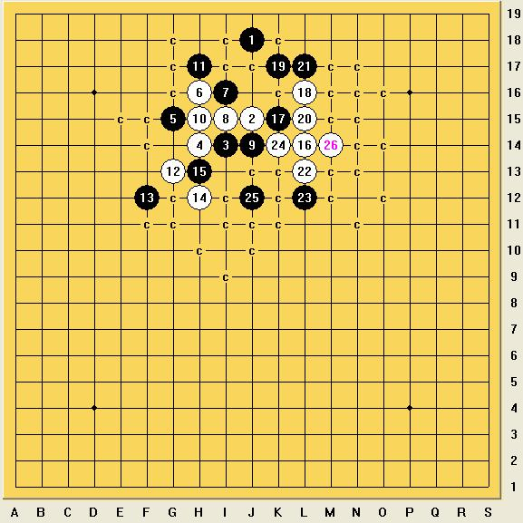
实战中的白28走的并不好,看似链接很多,当时实战感觉这个点也可以必胜,却存在实战黑29局部唯一防点.白30,白32,白34都是在扩展形状,同时,在时间紧张的情况下,消耗马鑫一些时间.马鑫黑棋应对准确.于是,我发现白棋无法取胜了,就回了一手,平衡了一下局面,马鑫出现了一个很大的失误,他又回补了一手,而忽略了我的三三胜.
通过这盘棋,我学到了,合理的利用时间,在有先手的必胜局面下,要精确的计算出必胜点,而并非凭着直觉选择差不多的一个点,总是怀着差不多的态度,那么,水平就会永远的差一点.
第四轮
燕京理工学院 王世雄（黑）胜 清华大学 赵鑫（白） 交换
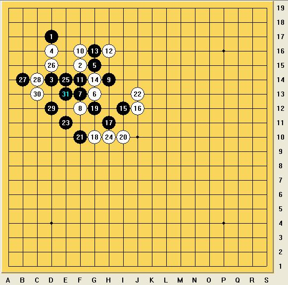
对手开局,我选择交换,主导黑棋,主要是想看下大家对于这个局面的理解,开局好像不是我的强项,在随意的开局中,我更享受将自己的想法,结合一手交换的行棋理念,完整的呈现在棋盘上.
对手白6的选择,我感觉还是不错的,黑7选择了一个可能在高校赛大家都不太常用到的处理手段.但是效果会比较好,我感觉符合我的行棋理念,开局的时候给对手一些先手,然后再利用自己积攒的外势在适当的时候,抢回先手.
黑15外飞盖,这是在之前考虑到的一个盘面,我还是比较喜欢这样的处理,白16盖,黑棋顺理成章的拥有了不错的局面,黑17,黑19是之前想好的一路变化,主要是想与左面的黑棋相链接,白22是败点.黑23很好的链接了黑棋的左面,形成了左面是一级连攻胜,右面是简单的二级练攻胜的必胜局面.
实战中白22走黑23或者走白24的位置,应该算是白棋稍稍好走的局面.
通过这盘对局,我认识到了,先手固然重要,如果一味的追寻先手,可能会因为进攻的不犀利,会引导对方走出局面的强防,最后,因为攻崩,而丢掉先手.
第五轮
燕京理工学院 王世雄（黑） 胜 北京理工大学 刘清权（白） 交换
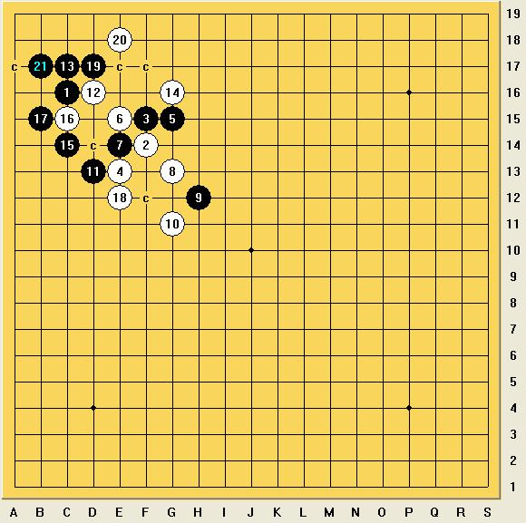
在比赛之前,我和刘清权在第二次领队会的时候下过一盘棋.他问了我一个黑白对攻的激烈盘面,让我帮忙分析一下黑白的变化.通过那盘对局,我发现刘清权思维很敏捷,但是先手意识稍稍弱些,可能和他下一手交换比较少有关系.
刘清权开局,我选择交换,他稍微思考了一下,选择了这个偏远的白2.前面交换正常,白10扩展形状,我选择的黑11打算先交换一下,然后再处理盘面,他白12的冲四,直接导致了白棋的失败.黑棋有很简单的取胜路线.
因为我俩相对比较熟悉,他从开始对局就有些患得患失,这和我大二的时候对阵黄金贤的感觉是一样的,还没开始下棋,就被对手的强大所震撼到了,如果拼一拼,或者奋力一搏,肯定会有更多的收获,即使输掉对局,拼搏之后也不会留下遗憾.从最后的成绩来看,他完全有可能战胜任何一个此次高校赛的人,希望刘清权能带领北理棋社,走的更远.
第一天的对局,就这样结束了,同时,我的同队师兄弟都取得了五连胜,因为,仅有我们同队的四个人是五连胜,所以注定,我们会上演一场德比战.这,将是一场艰难的比赛.
第六轮
燕京理工学院 马明杰（黑）负 燕京理工学院 王世雄（白） 未交换
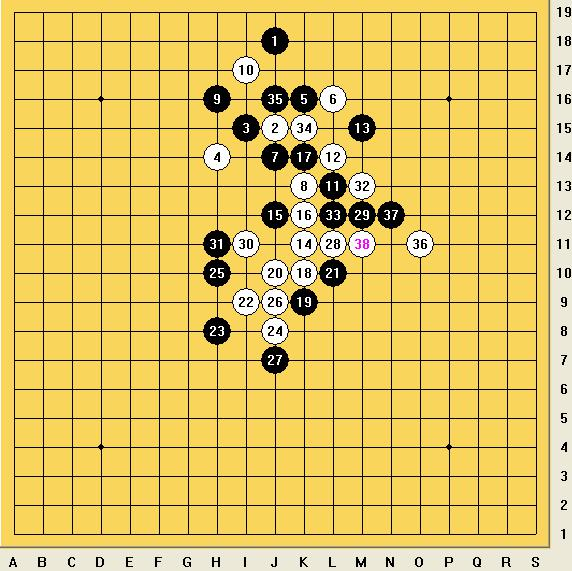
第二天的第一轮,本来可以轻松度过,对阵表出来,还是有些吃惊,想来又是一场恶战.我和明杰都太熟悉了,这对局,就看谁先失误了.
明杰执黑开局,避开一些常规开局,选择这个黑1,我没有选择交换,这个局面从黑5行至白10,是我所预料到的.白10的选择,果断的断掉了黑棋的链接,把黑棋的左面处理的相当干净,黑11回防一手,给了白棋先手的机会,白12和白14是扩展形状的好点,白16的顿挫显得尤其重要,黑棋不得不再委屈的回补一手,复盘时,明杰说忽略了下面白10和白12的那个活二了.白20和白22扩展形状,白24既牵制了黑棋,又形成了白棋的连接,当时算到实战白24必胜了,所以,重新验算一遍,确定无误后,我走出了正确的胜法.
其中,下面的白20是必胜的,也就是说,可以追溯到黑15是必败的.
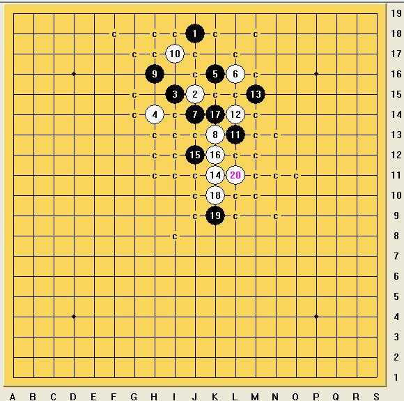
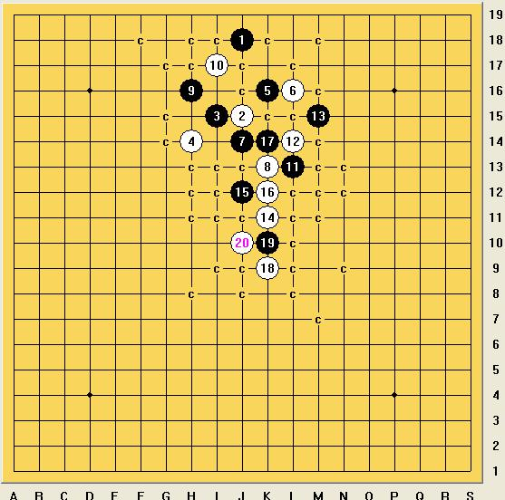
这是我在此次高校赛发挥比较好的一盘棋,无论是状态,还是行棋理念和做棋技巧,都让我很满意.
在比赛中,和队友相遇,这是我最不想看到的结果,但是,比赛终究是比赛,如果相遇,那么,别无选择.
第七轮
中央财经大学 董昊（黑）胜 燕京理工学院 王世雄（白） 交换
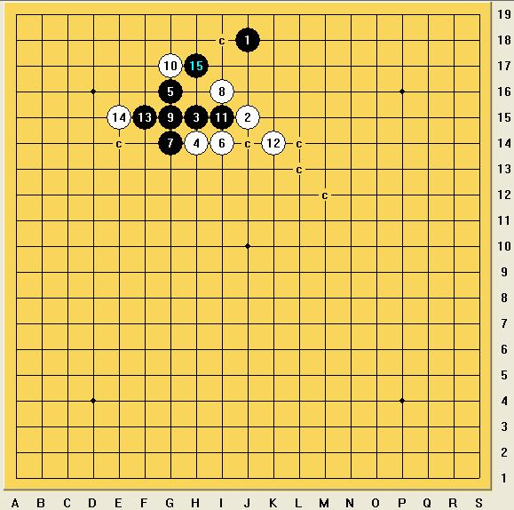
第七轮,遇到了好友董昊,我执黑选择了中心开局的黑1,他交换.由于他不习惯坐的位置看棋盘,于是,我俩坐在同一边,一起看这个盘面.他选择这个黑5,肯定是一个激烈的盘面了,用他的话解释说：“那就是干.”行至白10都是必然的选择.对于高校赛四十分钟公共时间,双方包干十分钟的赛制,董昊陷入了长考,因为我和董昊是好友,我没有选择加钟,时间过的很快,半个小时过去了,裁判开始加钟,而我们的盘面才进行到了白10手,黑11穿中,这样把白棋分割成了两片,而同时又牵制了白棋的两个活二.
我看了下盘面,不甘心老实回防一手,我仔细观察了对方的眼神和表情,于是,大胆的选择了下面这个必败的白12,而结果,正如我所料,董昊会直接挡我的活三,然后,我盖住黑棋四三点,取得局面的优势.赛后复盘,我跟董昊说出了我的想法,董昊恍然大悟,看到了我的骗.
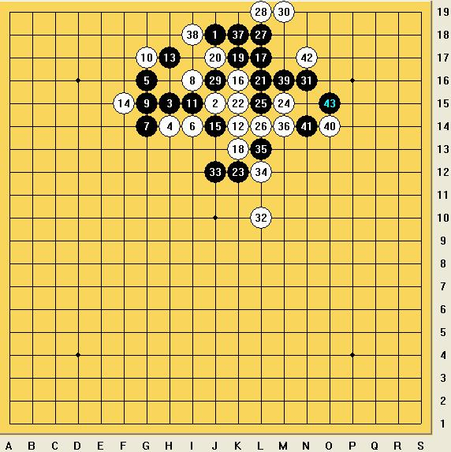
实战中,行至黑15,我利用五分钟的时间算后面的变化,算到白棋几乎必胜了.我白16,白18活三控制盘面,黑19做反,这是之前所预料到的.董昊说:“想骗我,黑19隐蔽的四三胜.”我说:“我很少在比赛中犯这样的错误.”下图的实战盘面,由于时间比较吃紧了,我想简化局面,就自以为是的冲了那个四,当时考虑的并不清楚,总觉得这棋是可以胜的.
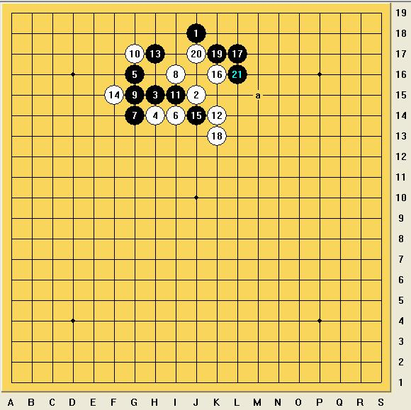
由于乱冲了那个四,白棋的整个局面,在交换完之后,是没有胜的.由于时间比较吃紧,我后面的一些变化选择,颇于应付,我提和,董昊不同意.董昊说:“即使我耗时间,也能耗死你.”由于时间更加吃紧,后面我随手走了几手.又被自己胡乱冲出的棋,搞死了.
复盘的时候,董昊说他有些赖皮了,我觉得,这并不是董昊的原因,而是我赐给了自己一场完败.
输掉这盘棋,感觉还是有些可惜,一度大好局面,却因为各种原因,各种问题,败的无话好说.也谢谢队友和朋友们的鼓励,既然是比赛,输掉棋,就应该难受,就应该反省自己,请理解我的心情.
中午吃饭的时候,我没有吃,而是静静的一个人在那里反省自己.通过这盘棋,让我学到了更多的东西,如何洞察对手的心思,如何利用技巧处理局面,如何合理的运用时间,如何端正态度面对既是朋友又是对手的比赛.
第八轮
燕京理工学院 王世雄（黑）胜 北京交通大学 王嘉骥 （白） 交换
王嘉骥开局,我选择交换,开局正常,我感觉白10稍稍有些不好,被黑11这样一穿,白12回一手,黑13这样一外盖,这棋,还是黑棋比较舒服,白棋有很多的压力.行至黑21,实战的白22是必败的.
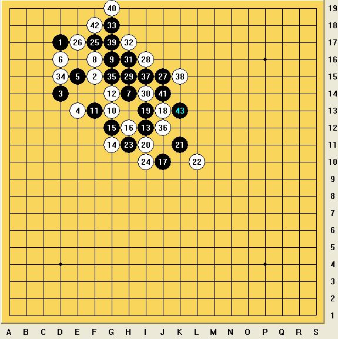
这盘棋,整体的思想就是在外面取得足够空间优势后,往里面补一手,补出一个完整的取胜路线,选择这样的黑23,黑25,其实是冒着一定风险的.下面是我实战中料想到的唯一防白26,跳过一个级别,直接做出一级连攻胜.我想对手也很可能在紧张的情况下,忽略掉自己的棋.于是,大胆一搏,果然和我预料的一样,对手还是回防了一手,之后,黑棋按照原定思路,完整的走出了这个胜法.
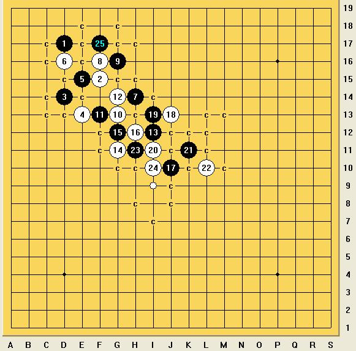
下面是关于这个盘面的补充,实战中,我想到的先冲掉活三的变化,也许,这样的处理,会使这盘棋变得更加的合理.
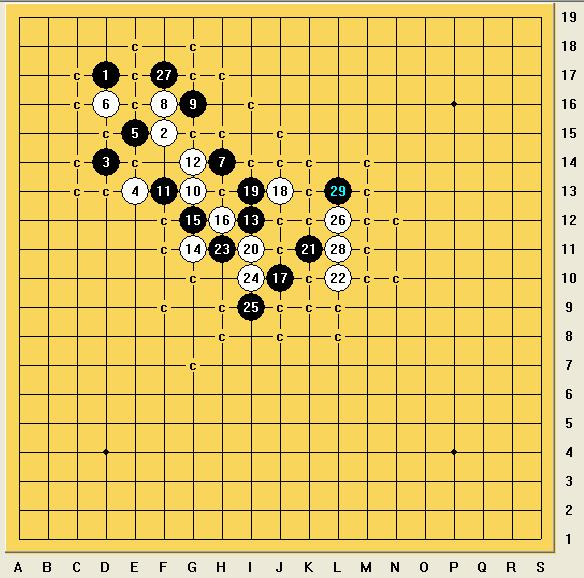
第九轮
对外经贸大学 穆宏远（黑）负 燕京理工学院王世雄（白）未交换
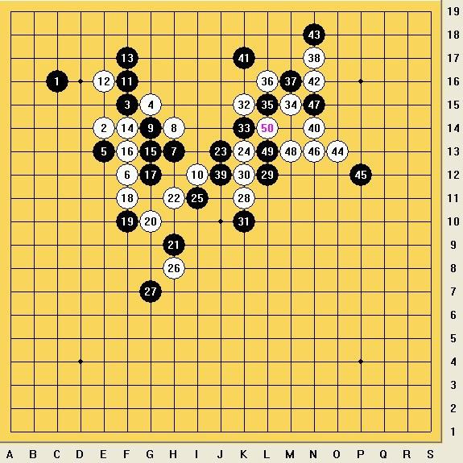
最后一盘棋,还是需要稳一稳,不料,这个开局,却走成了一个相对激进的变化.从黑7的选择,到黑21,这一路变化,是完全在我意料之中的.也许,这样的处理,双方都感觉可以接受.白22是这盘棋的转折,白棋有先手,却缺乏进攻的空间,这样的盘面,该如何选择,恰恰是对于白棋的考验.
最终,我还是选择了实战中的白22,白24,白26这样的变化,黑27手的盖,确实是处理这个盘面的一个不错的手段.直接否定了我能从左边借到白棋资源的想法.这样的局面,如果白棋一旦丢掉了先手,那肯定会败得体无完肤.
白28在伺机寻求连接,保持着白棋先手.后面白34的连接,很好的利用到了白棋上面的优势,以及还有一条稍微隐蔽些的眠三4-8-28,由于黑棋的判断错误,白36抢到了一个有力的连接,实际上,实战的黑35是必败的选择.黑37冲四,使这个棋局面得明朗.之后,我忽略了简单的三三胜,而选择了一个4步的一级连攻胜.
整体的九轮比赛,就这样结束了,同队的师兄马星星积8.5分获得了无禁组个人冠军,而我,积8分屈居第二.
通过这场比赛,发现了自己很多的问题和一些不成熟的策略.以后的路还很长,感谢一直并肩作战的队友们,感谢师傅和柏杉的无私付出,感谢北京交通大学组委会细心筹办比赛,感谢李文宇,李睿凡的裁判工作.感谢清齐.袁子渊和熊哥的现场助阵.感谢一直坚持于北京高校赛的小伙伴们.需要感谢的人太多,还有一个人,我需要感谢,感谢一个多年执着于棋的自己.
［此帖子已被 蓝天蓝 在 2013-12-8 14:16:05 编辑过］
［ 釣鱼岛岛主 于 2013-12-8 14:39:58 时奖励此帖[金币加 100 威望加1］
［ 釣鱼岛岛主同学于 2013-12-8 14:40:13 时花20金币送鲜花一朵］
［ 釣鱼岛岛主同学于 2013-12-8 14:40:13 时花20金币送鲜花一朵］
［ 釣鱼岛岛主同学于 2013-12-8 14:40:13 时花20金币送鲜花一朵］
［ 釣鱼岛岛主同学于 2013-12-8 14:40:13 时花20金币送鲜花一朵］
［ 釣鱼岛岛主同学于 2013-12-8 14:40:13 时花20金币送鲜花一朵］
#2 Re:第十三届北京市高校五子棋邀请赛自战棋评作者：蓝天蓝 发表时间：2013-12-8 8:29:06
图片不知道怎么上传了，打开只看到上传文件，没有上传图片#3 Re:第十三届北京市高校五子棋邀请赛自战棋评作者：蓝天蓝 发表时间：2013-12-8 8:36:38
从重新编辑也不行#4 Re:第十三届北京市高校五子棋邀请赛自战棋评作者：釣鱼岛岛主 发表时间：2013-12-8 9:33:51
好了#5 Re:第十三届北京市高校五子棋邀请赛自战棋评作者：屏蔽 发表时间：2013-12-8 11:44:33
好毛了……#6 Re:第十三届北京市高校五子棋邀请赛自战棋评作者：釣鱼岛岛主 发表时间：2013-12-8 11:50:31
额 我这怎么可以看了？#7 Re:釣鱼岛岛主【==Re:第十三届北京市高校五子棋邀请赛自战棋评==】作者：蓝天 发表时间：2013-12-8 13:41:38
引用：还是看不到图片
原文由 釣鱼岛岛主 发表于 2013-12-8 11:50:31 :
额 我这怎么可以看了？
#8 Re:第十三届北京市高校五子棋邀请赛自战棋评作者：蓝天蓝 发表时间：2013-12-8 14:17:16
现在应该可以看到图片了#9 Re:第十三届北京市高校五子棋邀请赛自战棋评作者：菜包先生 发表时间：2013-12-8 23:28:18
免责声明：
1.本人过去、现在以及将来都不认识楼主及楼主所述当事人，且自古以来与该相对人无利益关系。
2.人生有风险，上网需谨慎。本回贴不暗示、鼓励、支持或映射读者作出生活方式、工作态度、婚姻交友、股票债券买卖、子女教育的积极或消极判断。未成年人请在监护人陪同下阅读本贴。无完全民事行为能力者，请立即关闭网页，并用20％高锰酸钾＋75％乙醇对键盘、硬盘、电压插座、显示器、鼠标、cpu进行灌溉消毒。
3.如本人留言违反国家有关法律，请网络管理员及时删除本人跟贴。
4.因删贴不及时所产生的任何法律（包括宪法，加法、减法、乘法、除法、剑法、拳法、脚法、指法、民法，刑法，书法，公检法，基本法，劳动法，婚姻法，输入法，没办法，国际法，今日说法，吸星大法，与台湾关系法及文中涉及或可能涉及以及未涉及之法，各地治安管理条例）纠纷或责任本人概不负责。
5.本人谢绝任何跨省追捕行为。确因不抓不足以平民愤，或不抓就领不到薪水养家户口的公职人员，建议携带工作证、身份证、结婚证/离婚证、独生子女证、健康证、暂住证、毕业证、边防证、县以上**机关出具的介绍信温情操作。抓捕按照以下排序倒序：楼主、以及网络管理员以及网络运行商、电信运营商、电力供应商、电脑生产销售商。
6.如回复内容导致楼主或第三方、第四方、第N次方怀孕，本人愿配合做亲子鉴定，谢谢